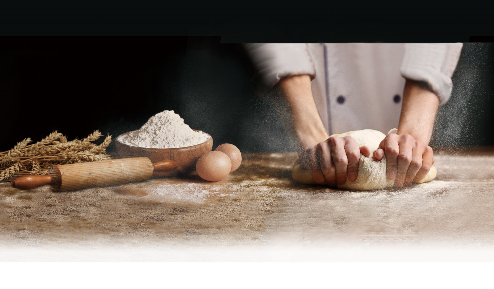

麵粉經過揉製與烘焙後，散發出來的美味，讓「REAL真‧烘焙坊」品牌創辦人始終無法忘懷... 品牌創始人 卓靖倫，兒時對麵包的鍾情化做事業的理想，2009年創建了REAL真‧烘焙坊』，讓民眾可以體驗，質樸與健康美味的力量，「真」成為REAL的生命，也讓，REAL魔法麵包揮灑魔力，成為烘焙界的時尚新指標！
「專業來自手作，等待是完美的堅持」，「REAL真．烘焙坊」秉持真誠，用「心」的溫度來製作每一顆REAL麵包，REAL以37℃的溫柔手感，將麵粉､酵母完美攪拌融合，在大自然26℃的呵護下，靜靜守候 REAL魔法的展現。仔細與用心的師傅們，考究最細緻的製作細節，每一顆麵包都擁有濃厚的真情與藝術雕作的禮遇，在260℃的烤爐中如鑽石淬煉般的高溫烘焙，等待典藏的美味出爐，而每一次的等待，就是「REAL for real」的堅持，能讓REAL麵包典藏入口時，湧出滿滿的感動，實現品牌真價值。
